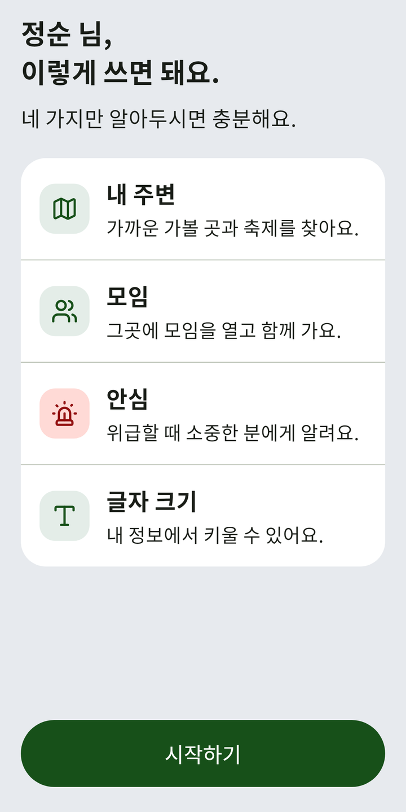
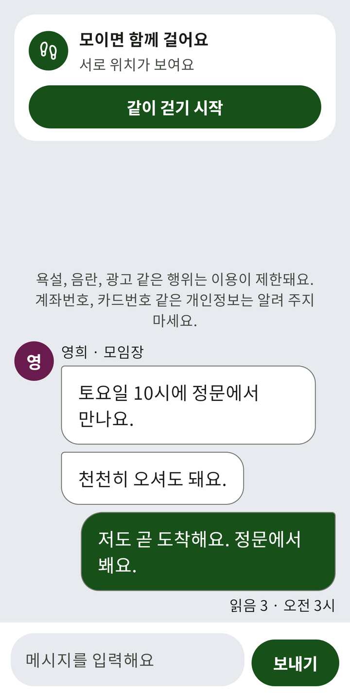
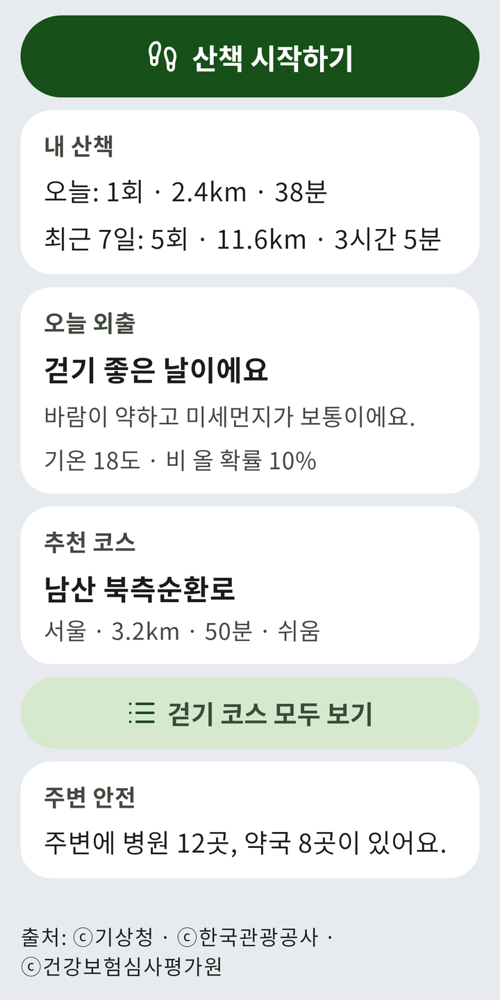
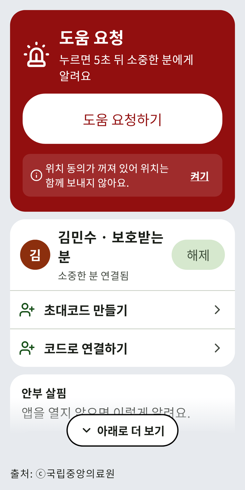

가볼 곳을 찾고
모임을 열어
함께 가요.
가까운 가볼 곳과 축제를 찾고, 그곳에 모임을 열어 함께 가는 앱이에요.

내 주변
가까운 가볼 곳과
축제를 찾아요.
- 가볼 곳 · 축제 · 쉼터 · 병원 가운데 골라 지도와 목록으로 봐요.
- 마음에 드는 곳은 「찜하기」로 담아 두고, 「친구·가족에게 보내기」로 알려요.
- 그곳에 도착하면 「도장 찍기」를 눌러요. 찜한 곳과 받은 도장은 「내 기록」에 모여요.
- 그곳에 열린 모임이 있으면 바로 볼 수 있어요.
모임
그곳에 모임을 열고
함께 가요.
- 「모임 만들기」에서 만날 장소를 정해 모임을 열어요. 함께 갈 곳도 고를 수 있어요.
- 모임마다 대화방이 있어 함께 이야기를 나눠요.
- 만날 시각이 다가오면 「같이 걷기 시작」을 누를 수 있어요. 모이면 서로 위치가 보여요.

걷기 운동
산책을 재고
걸을 길을 골라요.
- 「산책 시작하기」를 누르면 걸은 시간과 거리를 재요.
- 「오늘 외출」에서 날씨를 보고 나서요.
- 「걷기 코스 모두 보기」에서 걸을 길을 골라요. 완주 인증이 되는 코스는 정한 만큼 걸으면 인증을 받아요.
- 받은 완주 인증은 「내 기록」에서 다시 봐요.

안심
위급할 때
소중한 분에게 알려요.
- 「초대코드 만들기」나 「코드로 연결하기」로 소중한 분과 이어져요.
- 「도움 요청하기」를 누르면 5초 뒤 소중한 분에게 알려요. 「위급할 때 내 위치 보내기」에 동의해 두면 위치도 함께 보내요.
- 「안부 살핌」 — 앱을 열지 않으면 확인, 소중한 분, 도움 요청 차례로 알려요.
- 「가까운 응급실」을 보고 바로 전화할 수 있어요.

글자 크기
글자를 크게
볼 수 있어요.
「내 정보」의 「글자 크기」에서 기본, 중간, 크게 가운데 하나를 고르면 돼요.
그 밖에도
이웃과 어울려 보세요
-
친구초대하거나 받은 코드를 넣어 친구를 맺어요.
-
대화주고받은 대화를 한곳에서 봐요.
-
게시판글을 쓰고 이웃의 글을 읽어요.
혜택을 받아 보세요
-
일자리공공 일자리 공고를 봐요.
-
내 포인트출석, 두뇌 퀴즈, 걷기 운동으로 포인트를 모으고, 내 위치 꾸미기와 말풍선 고르기에 써요.
-
복지 혜택어르신 혜택을 주제와 지역으로 찾아요.
-
새 소식정부 정책 소식을 봐요.